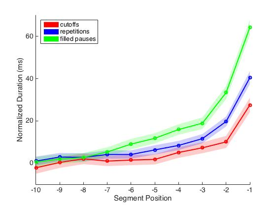
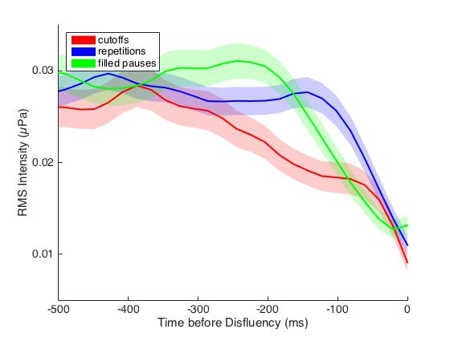
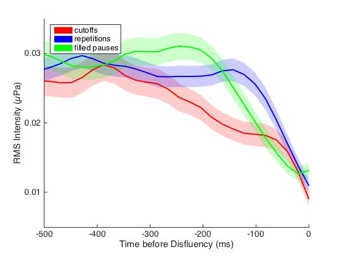

Neural correlates for semantic coherence
[SNL 2017 Abstract] [Poster]
Semantically incoherent words influence sentence comprehension. For example, in the sentence “He spread the warm bread with socks”, although “socks” is grammatically correct (i.e., noun), it hinders comprehension and elicits a large N400 effect. In collaboration with Jiangsu Key Laboratory of Language and Cognitive Neuroscience at Jiangsu Normal University, we correlated time-series predictions from semantic coherence and fMRI data recorded while both English and Chinese participants listened to a same story in the scanner. The results showed that both English and Chinese speakers activated the precuneous cortex in response to semantic coherence, consistent with previous studies reporting the precuneous cortex for semantic processing. The figure below shows the activation for semantic coherence across axial slices in English (red) and Chinese (blue) speakers' brain (t>3.1).

Prosodic manifestations of disfluency
[SpeechProsody 2016] [ICPhS 2015]
Theoretical models of speech production have hypothesized a relation between different types of disfluencies and the mechanisms responsible for them. Some disfluencies, such as filled pauses (e.g. ‘um’, ‘uh’) and repetitions (i.e. ‘the the’), are argued to arise from difficulty in planning, while cutoff disfluencies (e.g. ‘horiz-[ontal]’) are argued to arise from self-monitoring. This distinction predicts that prosodic manifestations of disfluency, i.e. durational slowing and pitch/intensity modulation, should occur earlier for planning disfluencies than for self-monitoring disfluencies. In this study, I examined segmental duration, pitch, and intensity in speech produced just before filled pause, repetition, and cutoff disfluencies in the Switchboard corpus . The results showed that durational slowing occurs earlier and is more extensive before filled pause disfluencies than before repetitions and cutoffs. In addition, decreases of f0 and intensity occurred earlier before filled pauses than before repetitions, and intensity decreased more gradually before cutoffs than before repetitions and filled pauses.
 
